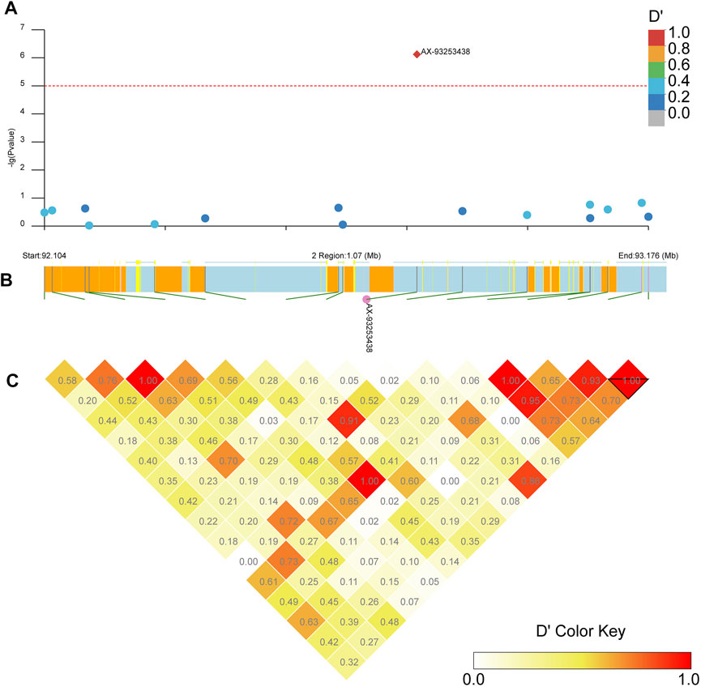

Research
Research Overview: Unraveling the Genetics of Disease-Carrying Mosquitoes
Project 1: “Population Genomics of Globally Distributed Arbovirus Vectors, Aedes albopictus and Aedes aegypti”
Duration: August 2015 – Present
My Journey in Vector Genomics: Since August 2015, my research has concentrated on the genetic underpinnings of two globally significant arbovirus vectors: Aedes albopictus and Aedes aegypti. These mosquitoes are not just pests but pivotal in transmitting critical diseases like dengue fever, substantially threatening global public health.
Fundamental Discoveries and Publications: My journey in this domain has led to several notable publications in esteemed scientific journals. Some key highlights include:
- Genotyping Array for Ae. albopictus: In a groundbreaking study published in Parasites & Vectors (2023), I developed a novel genotyping array, a crucial tool for studying the genetic makeup of the invasive Ae. albopictus mosquito. Below is a figure from the chip development manuscript, where I analysed the population structure of Ae. albopictus at its native range.

- Genome-Wide Association Studies (GWAS) on Ae. aegypti: My research, featured in Frontiers in Genetics (2022), revealed new genetic loci associated with pyrethroid resistance in Ae. aegypti, offering new insights into combating insecticide resistance. Below is a figure from this study showing a PCA, a quantile quantile and Manhattan plots.
However, my favorite part of the study was to analyse the genome architecture difference between resistant and susceptible mosquitoes. First. I looked what other SNPs may be linked to SNPs identified in the GWAS:

Next, I did linkage network analysis. This part was fascinating since I discovered different linkage patterns between the resistant and susceptible mosquitoes in two independent populations, indicating assortative matting, where susceptible females avoid matting with resistant males, perhaps because their wing beat might be slower due to the fitness cost of the kdr mutations.
We can recreate the mosaic like linkage patterns for each chromosome:
- Evolution of kdr Haplotypes in Ae. aegypti: Published in PLOS Neglected Tropical Diseases (2020), this study illuminated the independent origins of the F1534C kdr mutation, enhancing our understanding of the evolutionary dynamics of insecticide resistance.
Here is an overview of the sodium channel and know kdr mutations:
Here is the summary of the frequencies of all the haplotypes I found:
I found evidence of two independent origins of the 1534C kdr mutation in Ae. aegypti.
Technical Summary: My approach integrates advanced genomic tools with field studies. By employing SNP chips and GWAS, I have identified crucial genomic regions associated with resistance to dengue infection and pyrethroid detoxification in mosquitoes. This research has been pivotal in understanding the geographic variations in genetic factors affecting disease transmission rates.
Significance and Impact: The significance of this project extends beyond academic realms into crucial public health domains. By uncovering the genetic mechanisms behind mosquito survival, disease transmission, and insecticide resistance, my work lays the foundation for more effective mosquito management strategies. This is particularly pertinent in the United States, where controlling the spread of dengue fever is an escalating public health concern.
Project 2. Decoding Mosquito Attraction through Gene and microRNA Analysis
Understanding Mosquito Attraction: In this pivotal project, I delve into the molecular mechanisms underlying mosquito attraction to humans. The central focus is on two key species: Anopheles coluzzii, a known malaria transmitter, and Ae. aegypti, the primary carrier of dengue fever. I aimed to unravel the role of olfaction genes in determining host preference, a crucial factor in disease transmission.
Research Methodology: My approach involved extracting RNA from the antennae of these mosquitoes, where I targeted two primary types of molecules: messenger RNA (mRNA) and microRNAs. These are instrumental in regulating gene expression. Utilizing next-generation sequencing (NGS) technologies, I captured a comprehensive snapshot of active genes, focusing on those that play a role in olfaction.
Key Insights and Publications:
Chemosensory Gene Expression: My research, published in Parasites & Vectors (2020) and BMC Genomics (2017), highlighted the differences in chemosensory gene expression between male and female mosquitoes, shedding light on potential genes that influence host preference.
MicroRNA Research in Vector Control: Presentations at various scientific meetings, such as the Annual Meeting of the ASTMH and the Society for Vector Ecology, emphasized the potential of microRNAs in developing transgenic mosquito control strategies.
Bioinformatics Analysis: Employing tools like EdgeR and DESeq2 within the R programming environment, I analyzed the differential expression of olfactory genes. This analysis revealed which genes were more active in female mosquitoes, potentially influencing their attraction to humans.
Implications of the Research: This project is not just an academic endeavor but a step towards tangible public health solutions. We can develop more effective mosquito control strategies by understanding the genetic underpinnings of mosquito attraction to humans. This could include new repellents or attractants, directly impacting the transmission of diseases like malaria and dengue fever.
Significance in the US Context: With mosquito-borne diseases growing in regions like Florida and Puerto Rico, this research is particularly relevant to the United States. The insights gained can lead to improved repellents and control measures, safeguarding public health and potentially reducing healthcare costs associated with mosquito-borne illnesses.
Aligning with Broader Goals: This project aligns seamlessly with my broader goal of mitigating the impact of mosquito-borne diseases through advanced genetic research. The findings contribute significantly to our understanding of the transmission cycle of pathogens and aid in developing novel disease control strategies.
Project 3. Balancing Pest Control and Protecting Beneficial Insects
Impact of Commonly Used Insecticides on Natural Enemies
Exploring Insecticide Effects on Beneficial Insects: In this research, I have delved into the effects of various insecticides on beneficial insects, crucial for natural pest control. My studies have focused on understanding the delicate balance between effective pest management and preserving these beneficial species.
Key Findings and Publications:
Sub-Lethal Effects of Permethrin: In a study published in the Journal of Economic Entomology (2009), I explored the reaction of a generalist predator to permethrin, revealing a sub-lethal stimulatory response that suggests complex regulatory mechanisms.
Neem Oil and Lacewing Chrysoperla externa: My research in Arquivos do Instituto Biológico (2009) highlighted the significant impact of neem oil on the development stages of the lacewing, an essential natural pest controller.
Botanical and Synthetic Insecticides on Lady Beetles: The study in Arquivos do Instituto Biológico (2007) brought attention to the potential risks posed by insecticides to the lady beetle Cycloneda sanguinea, a vital predator in controlled environments.
Field Studies and Broader Implications: My field studies have included evaluating the dynamics of C. externa in various agricultural systems, emphasizing sustainable practices. The toxicity analysis of various pesticides on this natural predator in coffee crops (Neotropical Entomology, 2005) and citrus crops (Neotropical Entomology, 2004) underlines the importance of integrated pest management strategies.
Significance of the Research: This project is fundamental for informing agricultural professionals about using insecticides responsibly and preserving beneficial insects integral to natural pest control. By understanding this balance, we can maintain healthy crop ecosystems and reduce reliance on chemical pest control methods. This leads to more sustainable agricultural practices, which are crucial for ecosystems and food supply.
Relevance to the United States: In the context of the United States, this research supports sustainable agriculture and pest management strategies vital for the nation’s food supply and environmental health. Understanding how to protect beneficial insects allows for natural pest population reduction, minimizing chemical use, and lowering production costs.
Aligning with Broader Goals: This research complements my genomics work by promoting sustainable environmental practices essential for the long-term effectiveness of vector control programs. By identifying less harmful insecticides to beneficial insects, my work supports maintaining natural pest control mechanisms, reducing reliance on chemical interventions contributing to resistance.